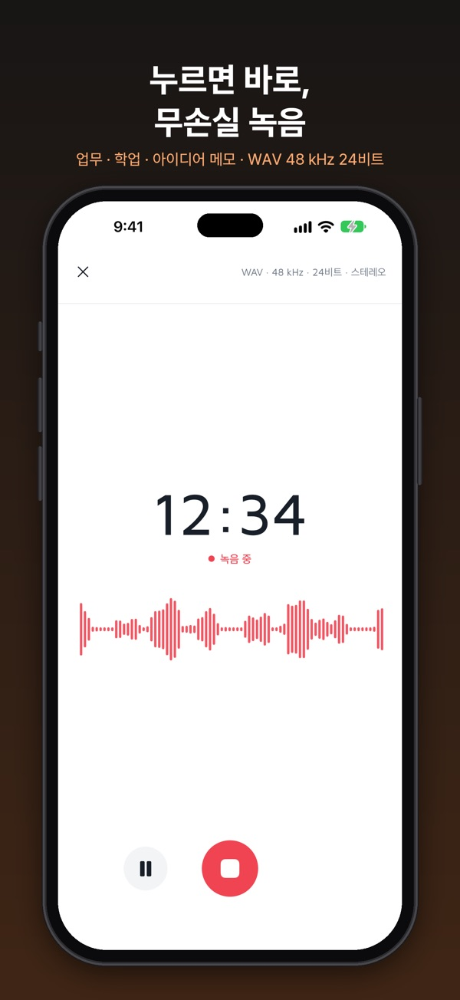
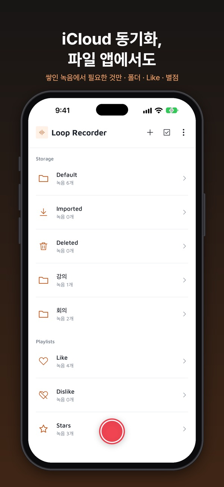
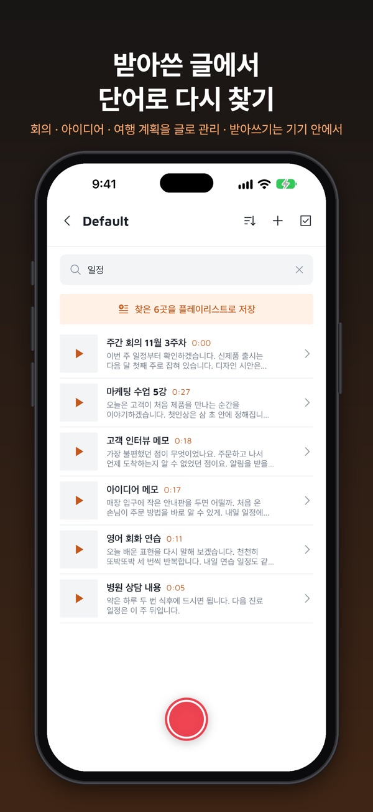
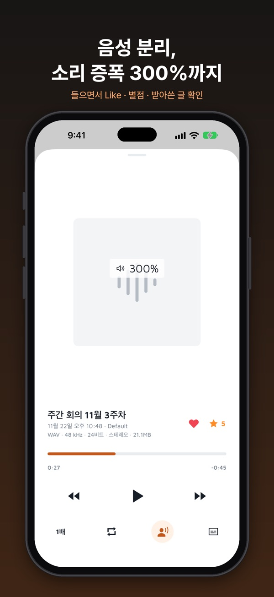
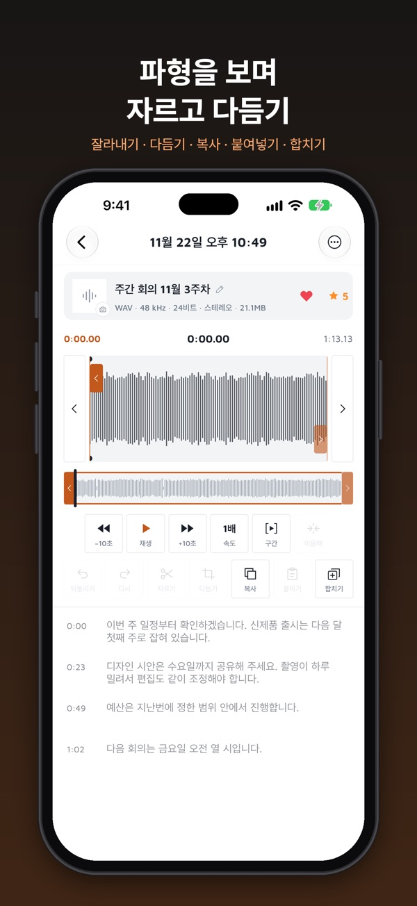
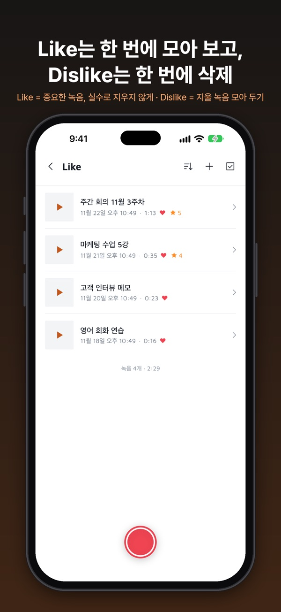

Loop Recorder는 광고 없는 음성 녹음 앱입니다. 누르면 바로 녹음하고, 녹음은 iCloud Drive에 저장됩니다.
무손실 녹음
- 기본이 무손실(WAV 48 kHz · 24비트 · 스테레오)입니다.
- 용량을 줄이고 싶으면 M4A(128~320 kbps)로 바꿀 수 있습니다.
- 설정과 녹음 화면에 등급 말 대신 실제 숫자가 나옵니다.
받아쓰기와 검색
- 녹음이 끝나면 기기 안에서 글로 받아씁니다. 소리를 밖으로 보내지 않습니다.
- 받아쓴 글에서 단어를 검색하면 그 대목으로 바로 갑니다.
다시 들을 때
- 음성 분리: 주변 소리를 줄이고 목소리를 또렷하게 들려줍니다. 원본 파일은 그대로입니다.
- 작게 녹음된 소리는 음량을 더 키워 들을 수 있습니다.
- 화면을 열거나 줄을 눌러도 자동으로 재생되지 않습니다. 재생 단추를 눌렀을 때만 소리가 납니다.
- 두 번 탭해 10초 넘기기, 좌우로 밀어 감기, 길게 눌러 2배속.
편집
- 파형을 보며 잘라내기 · 다듬기 · 복사 · 붙여넣기 · 합치기.
- 자르기 전에 이음매를 미리 들어 볼 수 있습니다.
- 편집한 것은 새 녹음으로 저장되고 원본은 남습니다.
정리
- 폴더, Like · Dislike, 별점, 플레이리스트.
- 지운 녹음은 Deleted 폴더에 모였다가 되살릴 수 있습니다.
iCloud
- 녹음은 iCloud Drive의 Loop Recorder 폴더에 저장되어 파일 앱에서도 볼 수 있습니다.
- iCloud를 쓰지 않고 기기에만 저장할 수도 있습니다.
Apple Watch
- 손목에서 바로 녹음하고, 녹음은 아이폰으로 넘어옵니다.